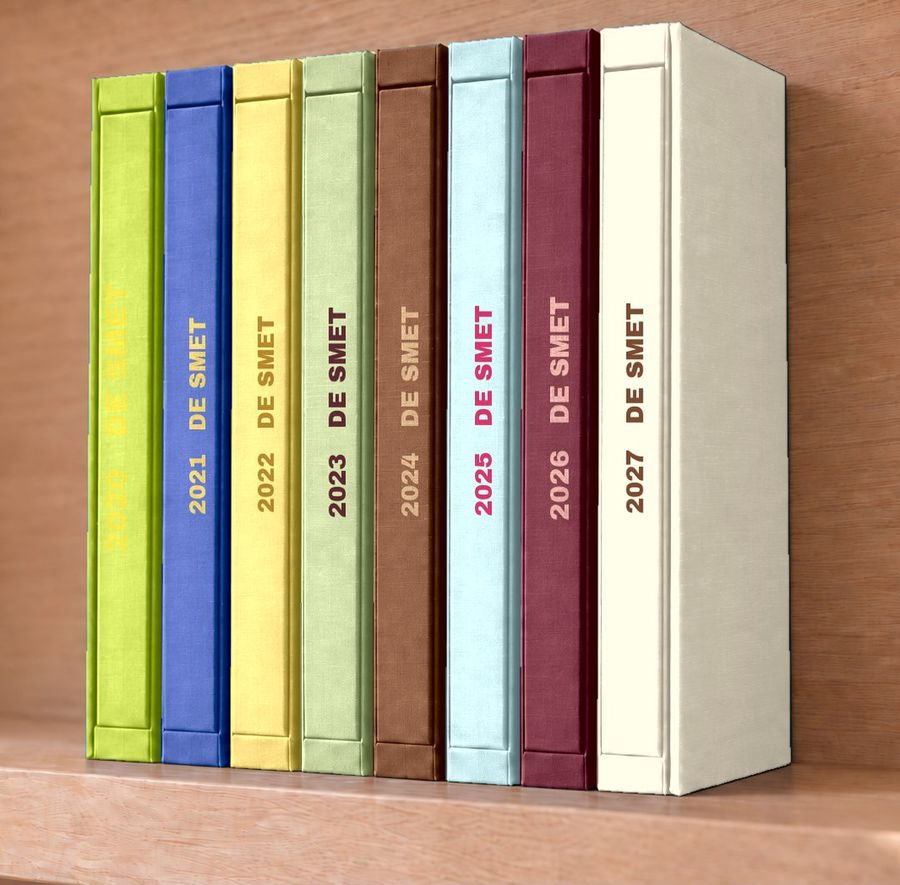
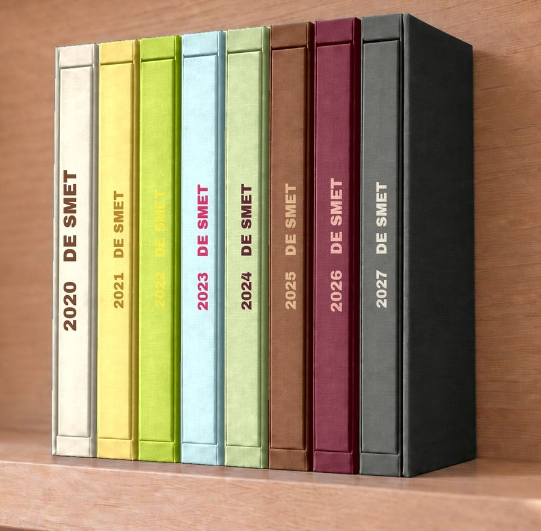
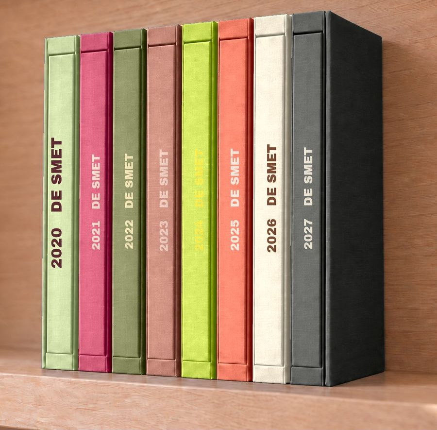
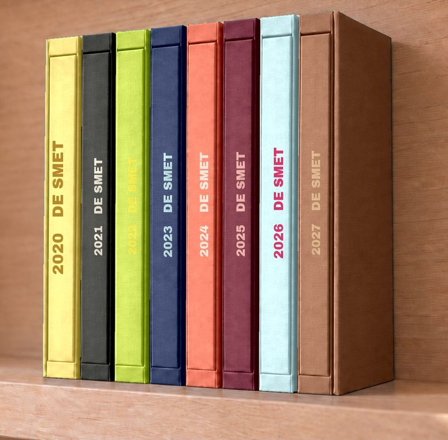
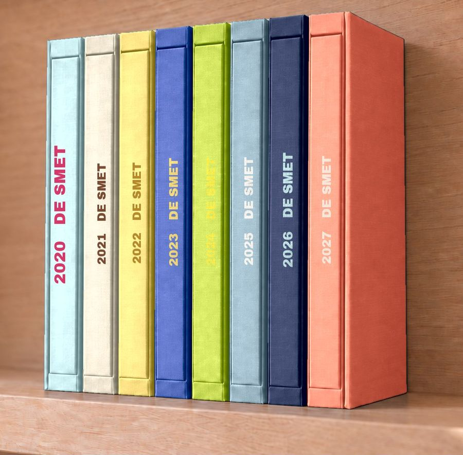
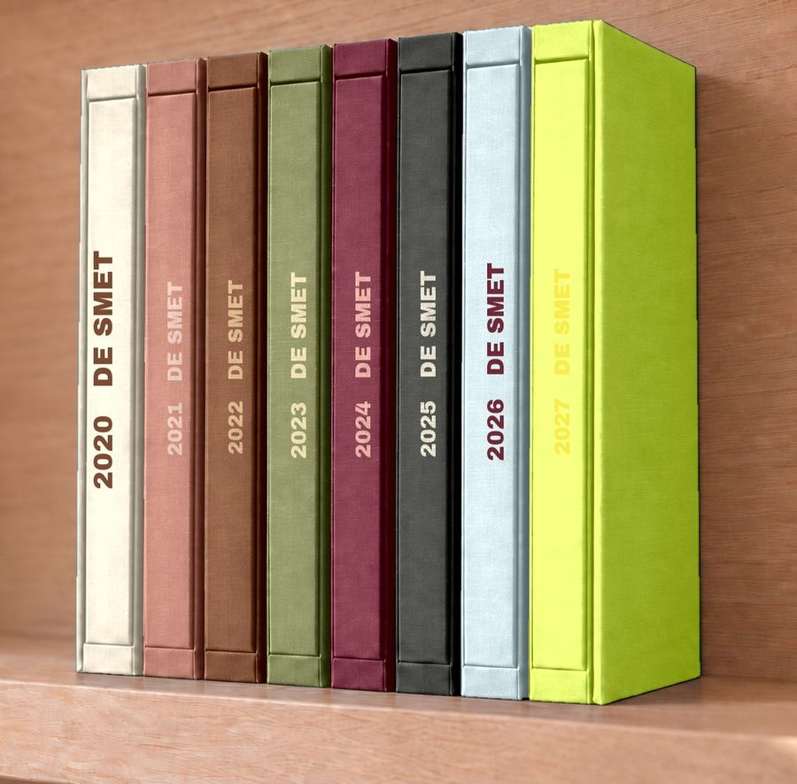
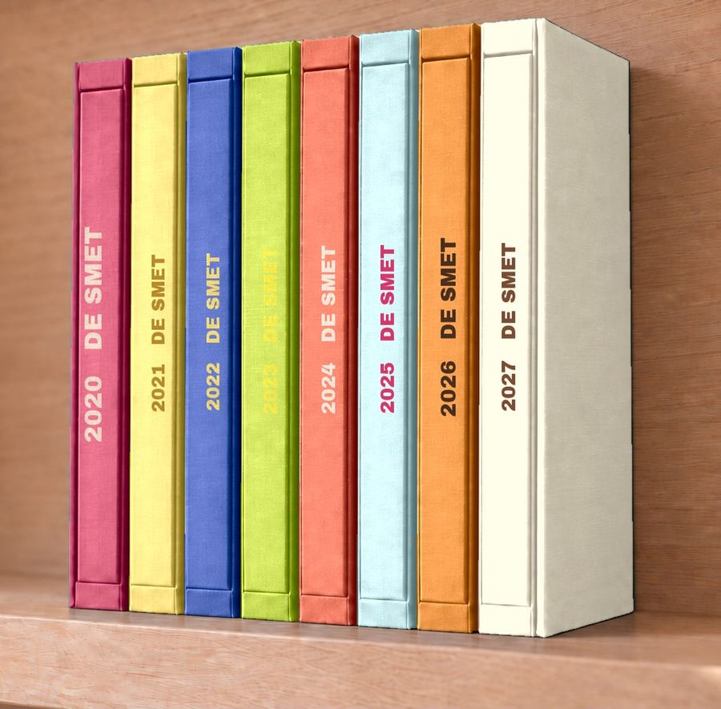

anno
Bekijk de website →
anno · premium familie-albums, één per jaar
Welke rij zou jij op je plank willen?
Elk jaar zijn eigen kleur. Acht mogelijke volgordes — dezelfde boeken, alleen een andere kleur per jaar. Laat me gewoon weten welk nummer jij het mooist vindt.

1 limoen · kobalt · geel · pistache · cognac · ijsblauw · bordeaux · ecru 
2 ecru · geel · limoen · ijsblauw · pistache · cognac · bordeaux · houtskool
3 koraal · mandarijn · cognac · geel · olijf · pistache · steenblauw · inkt

4 pistache · framboos · olijf · klei · limoen · koraal · ecru · houtskool 
5 geel · houtskool · limoen · inkt · koraal · bordeaux · ijsblauw · cognac 
6 ijsblauw · ecru · geel · kobalt · limoen · steenblauw · inkt · koraal 
7 ecru · klei · cognac · olijf · bordeaux · houtskool · mist · limoen 
8 framboos · geel · kobalt · limoen · koraal · ijsblauw · mandarijn · ecru
Eén boek per jaar, in linnen, met jullie naam op het omslag.
Bekijk anno
anno · Gemaakt in België.